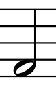
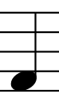
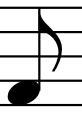
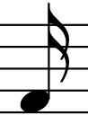

After the first lesson about value object you can feel a little bit lost, if not that's good for you :)
In the first part of the Value Object Pt. 2 & Entity lesson you will use the value objects (both known and unknown yet). They will be used to introduce the concepts from the music domain. After, the first part, the new domain-driven design concept, the Entity will be explained and used by you.
In the previous lesson, the note value was just the part of the time signature and represented internally (thanks to the tiny object) as simple integer value.
However, note value is a bigger concept and it is used also in the note concept itself. The note value represents relative duration of the note in abstract/relative unit of beats.
As there is also concept of duration in music, we will use word length for the real time the note value represents. To calculate the length, you will also need concept that represents how long the beat as a unit lasts. And this is what you are going to do in the next task.
What's the most interesting, the note value's graphical representation is well-known to all of us. Please take a look at the below table. This round something, with or without stems and flags is the note value. The thing becomes a note only when written on the stave (the five parallel lines). As long as there is no stave, there is just a plain note value. However, the note value concept is so bonded and indistinguishable with the note itself, that people use it interchangeably.
| Note value symbol | Name prefix | Written in text as | Relative value | Beat value |
|---|---|---|---|---|
|
whole | 1/1 | 1 | 4 |
|  | half | 1/2 | 2 | 2 |
|  | quarter | 1/4 | 4 | 1 |
|  | eighth | 1/8 | 8 | 0.5 |
|  | sixteenth | 1/16 | 16 | 0.25 |
|
thirty second | 1/32 | 32 | 0.125 |
There are more note values than that, but we will use just these six for the sake of simplicity.
You can also see the new version of the NoteValue class implemented this time as
enum class
as there are only six instances of note value. The relative value and the beat value of the notes
value are represented by val value: Int and val lengthInBeats: BigDecimal